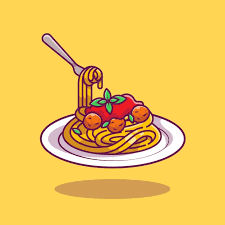
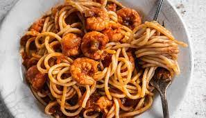
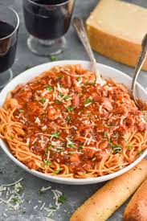
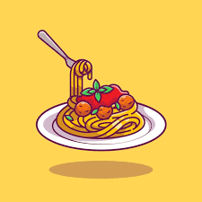
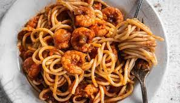
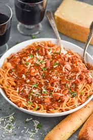

Spaghetti is a traditional Italian Cuisine. The popularity of Spaghetti spread throughout Italy due to the establishment of Spaghetti factories in the 19th century enabling a mass production of Spaghetti for the Italian market.
Spaghetti is made from a dough that is then put in a Spaghetti Maker to make the thin long pasta we know today, but this spaghetti is still fresh.
The Dried Spaghetti that we buy in the store is made by drying the fresh spaghetti in an extruder.
There are different ways to cook spaghetti, there is White spaghetti with stew, Jollof Spaghetti and moreand there are many things to add to spaghetti; chicken, beef, mince, seafood and more.
How to cook Jollof Spaghetti and shrimps
Ingredients
Measurements
Spaghetti
One Pack/box
Chicken stock
2 3/4 Cups
Tomates
5 large
Onion
1 large
Red Bell Pepper
1
Scotch Bonnet Pepper
2
Vegetable oil
3 Tablespoons
Dried thyme
1 Tablespoon
Curry Powder
1 Tablespoon
Salt
As much as necessary
Shrimps
1 pack
Instructions
The Tomato Sauce
Blend the tomatoes, onions, and peppers until smooth.
Boil down the tomato sauce in a pot on medium- high heat until the sauce is about half the amount, and has thickened significantly to look like a paste. This takes about 15-20 minutes, depending on how high the heat is.
Make sure to stir the sauce occasionally to prevent it from burning.
Once the sauce is reduced, pour in the stock, oil, thyme and curry powder. At this stage, taste the sauce and adjust for salt.
The Spaghetti
Add in the spaghetti, pushing it down or breaking it to fit into the pot.
Cover and allow to cook for 5 minutes on low-medium heat.
After 5 minutes, the pasta should be soft enough to stir. Stir, turn down the heat to low, and allow to cook for another 8-10 minutes.
After 8 minutes, stir, and the pasta should be cooked. If it is not, add in a splash (about 1/4 cup) of water and continue to cook for another 5 minutes.
The Shrimp
Put water in a pan and add your shrimps, Let it boil on medium heat for 5-10minutes.
Add your seasonings, and wait for the water to evaporate so it can absorb the seasoning.
You can then roast, deep fry, simmer or braise it
Add the spaghetti and shrimps into the sauce and stir. Plate your delicious and enjoy with a chilled drink.
 




